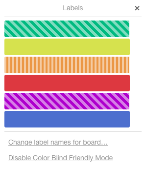

I’m Hsiaoming Yang
a.k.a lepture
- 楊曉明
- lepture.com
- github.com/lepture
- twitter.com/lepture
It is the right thing to do.
Just follow the standards.
Accessibility in real life
Color Blindness

~8%
The Web is fundamentally designed to work for all people.
Trello Color Blind Friendly Labels

Voice Over
VO: Control+Option
| Shortcut |
Description |
| VO+shift+down |
Enter an area |
| VO+shift+up |
Leave an area |
| VO+left |
Next element |
| VO+right |
Previous element |
| Shortcut |
Description |
| VO+U |
Web rotors |
| VO+Command+N |
Find next heading |
| VO+H |
Show Voice Over Help |
ChromeVox
Accessibility Developer Tools
Aria Label
{% highlight html %}
{% endhighlight %}
View Demo
{% highlight html %}
banner
main
footer
{% endhighlight %}
View Demo
Live Region
{% highlight html %}
text to be spoken
{% endhighlight %}
View Demo
role=tablist
{% highlight html %}
This is the first tab.
This is the second tab.
{% endhighlight %}
aria-hidden
{% highlight css %}
[aria-hidden=true] { display: none; }
{% endhighlight %}
aria-selected
{% highlight css %}
[aria-selected=true] { background: #64d; }
{% endhighlight %}
Improve accessibility every day.
You can't create a spaceship in one day.
It helps you design your HTML.
It helps search engine.
Proud to be a web developer
THANKS
Hsiaoming Yang / lepture